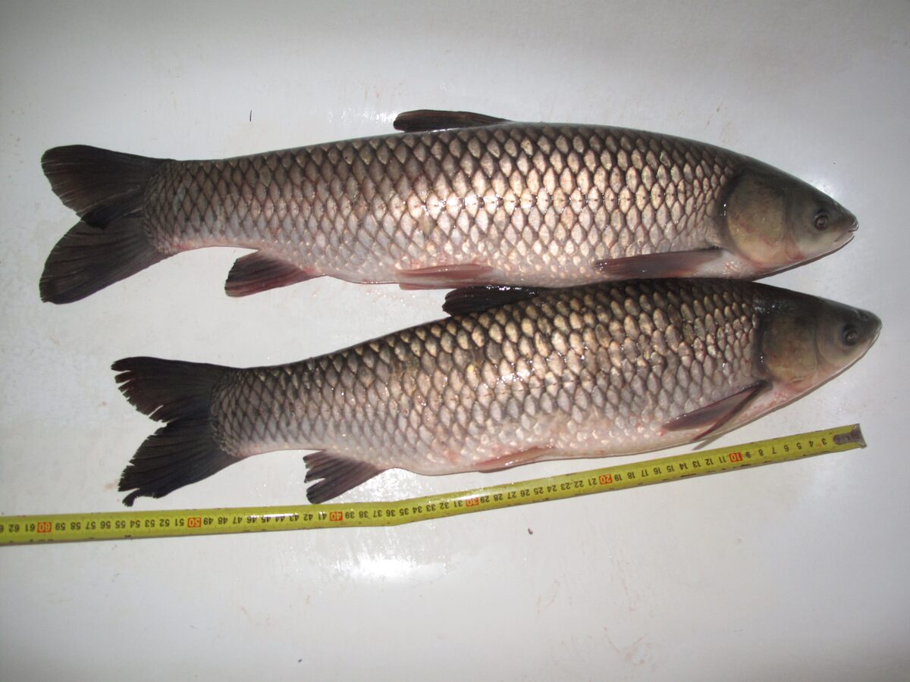

Rozpoznawanie i biologia amura
Wygląd i cechy rozpoznawcze
Amur biały (Ctenopharyngodon idella) to duża ryba karpiowata o wydłużonym, walcowatym, niemal torpedowatym ciele — zupełnie innym niż wygrzbiecona sylwetka karpia. Głowa jest szeroka i lekko spłaszczona, z końcowym otworem gębowym pozbawionym wąsików, co od razu odróżnia go od karpia. Łuski są duże, wyraziste, z ciemniejszą obwódką tworzącą na bokach delikatny siateczkowy wzór; grzbiet jest oliwkowy do szarozielonego, boki srebrzystozłote, brzuch jasny. Płetwa grzbietowa jest krótka, bez twardego, piłkowanego promienia typowego dla karpia. Charakterystyczne są też mocne zęby gardłowe o pofałdowanej powierzchni, którymi amur rozciera pokarm roślinny. W polskich warunkach dorasta zwykle do 60–90 cm i kilkunastu kilogramów, a w sprzyjających łowiskach spotyka się osobniki ponad metrowe. Bywa mylony z jaziem lub kleniem przy mniejszych rozmiarach, jednak duże łuski z siateczkowym rysunkiem i masywna, szeroka głowa rozstrzygają oznaczenie.
Pochodzenie i występowanie w Polsce
Amur pochodzi z dużych rzek Azji Wschodniej, przede wszystkim z dorzecza Amuru oraz nizinnych rzek Chin. Do Europy, w tym do Polski, został sprowadzony w latach sześćdziesiątych XX wieku jako narzędzie biologicznej walki z zarastaniem zbiorników — roślinożerny tryb życia czynił z niego naturalną „kosiarkę" do nadmiernie rozwiniętej roślinności wodnej. Dziś amur występuje w Polsce wyłącznie tam, gdzie został wpuszczony: w stawach, łowiskach komercyjnych, jeziorach i zbiornikach zaporowych zarybianych przez gospodarzy, a sporadycznie w rzekach, do których trafił z hodowli lub łowisk. Preferuje wody stojące i wolno płynące, ciepłe, dobrze nasłonecznione, z bogatą roślinnością miękką i twardą. Latem często przebywa płytko, w strefie litoralu, przy pasach trzcin i wśród roślinności zanurzonej, gdzie znajduje pokarm.
Biologia i rozród — populacje z zarybień
W naturalnym zasięgu amur odbywa tarło w nurcie wielkich rzek przy temperaturze wody powyżej około 20 °C, a jego pelagiczna ikra rozwija się, dryfując dziesiątki kilometrów z prądem. Polskie rzeki nie zapewniają takiej kombinacji temperatury, długości niezabudowanego nurtu i reżimu hydrologicznego, dlatego amur w Polsce nie rozmnaża się naturalnie — wszystkie nasze populacje pochodzą z zarybień, a narybek produkowany jest w wylęgarniach metodą kontrolowanego rozrodu. Ma to istotne konsekwencje: liczebność amura na danej wodzie zależy wyłącznie od decyzji gospodarza, a pogłowie nie odbudowuje się samo. Amur rośnie szybko, zwłaszcza w ciepłe lata, przybierając w dobrych warunkach po kilka kilogramów w sezonie, i dożywa kilkunastu, a nawet ponad dwudziestu lat. Dojrzałość płciową osiąga późno, w warunkach klimatu umiarkowanego zwykle po 6–10 latach, co w naturze i tak nie prowadzi u nas do skutecznego rozrodu.
Żerowanie w ciągu roku
Amur jest rybą niemal wyłącznie roślinożerną — dorosłe osobniki zjadają rdestnice, moczarkę, rzęsę, glony nitkowate, młode pędy trzcin, a także trawy i liście wpadające do wody; jedynie narybek odżywia się planktonem i drobnymi bezkręgowcami. Kluczowa jest temperatura: intensywne żerowanie zaczyna się dopiero przy wodzie powyżej mniej więcej 15–18 °C, a szczyt apetytu przypada na pełnię lata, przy 22–26 °C, gdy amur potrafi zjadać dziennie masę roślin porównywalną ze znaczną częścią masy własnego ciała. Wiosną rusza do żeru późno, wyraźnie później niż karp, i początkowo żeruje ostrożnie na płyciznach nagrzewających się najszybciej. Jesienią, wraz z ochłodzeniem wody poniżej kilkunastu stopni, aktywność gwałtownie spada, a zimą amur praktycznie nie pobiera pokarmu, stojąc w głębszych partiach zbiornika. Z tego względu realny sezon połowu amura trwa u nas od późnej wiosny do wczesnej jesieni, z naciskiem na ciepłe, stabilne pogodowo okresy.
Przepisy, metody i praktyka połowu
Wymiar ochronny, okres ochronny i limity
Status prawny amura jest specyficzny, bo jako gatunek obcy nie zawsze figuruje w ogólnokrajowych wykazach wymiarów i okresów ochronnych — o zasadach jego połowu decydują przede wszystkim regulaminy okręgów PZW i gospodarzy łowisk. W praktyce na wielu wodach obowiązuje wymiar ochronny amura, często około 40 cm (spotyka się też 50 cm i więcej), oraz limit dobowy rzędu 1–2 sztuk, nierzadko liczony łącznie z karpiem. Łowiska komercyjne i wody nastawione na duże ryby często wprowadzają całkowity zakaz zabierania amurów lub górny wymiar, powyżej którego rybę trzeba wypuścić. Ponieważ rozstrzał lokalnych regulacji jest tu większy niż przy większości gatunków rodzimych, przed każdym wyjazdem bezwzględnie należy sprawdzić aktualne zezwolenie, regulamin okręgu lub łowiska — podane wyżej wartości są wyłącznie orientacyjne.
Metody i przynęty
Amura łowi się przede wszystkim metodami gruntowymi: klasyczną metodą włosową na zestawy karpiowe, method feederem oraz — na płytkich, zarośniętych wodach — czułym, dalekosiężnym spławikiem i zestawami powierzchniowymi. Sztandarowe przynęty to kukurydza (gotowana, konserwowa i pływająca sztuczna), pelety, mniejsze kulki proteinowe, a także przynęty stricte roślinne: źdźbła młodej trawy, liście sałaty, kostki ogórka czy pędy roślin wodnych, podawane przy powierzchni lub w toni. Latem znakomicie sprawdza się chleb i pływające przynęty prezentowane na powierzchni w pobliżu żerujących ryb. Amur jest ostrożny i bardzo wrażliwy na grube zestawy, dlatego mimo jego siły warto stosować możliwie delikatne, dobrze zamaskowane przypony, niewielkie haki (zwykle 8–4) i naturalną prezentację; jednocześnie sprzęt główny musi mieć zapas mocy, bo pierwsze odjazdy amura należą do najgwałtowniejszych wśród naszych ryb spokojnego żeru.
Taktyka łowienia i nęcenie
Skuteczny połów amura zaczyna się od obserwacji: w ciepłe dni ryby zdradzają się przy powierzchni, wśród roślin i przy nagrzanych płyciznach, i tam właśnie warto budować łowisko. Nęcenie powinno być systematyczne, ale oparte na lekkostrawnych, znanych rybom składnikach — kukurydzy, pelecie, konopiach — podawanych regularnie w niewielkich porcjach, najlepiej przez kilka dni przed zasiadką, jeśli regulamin na to pozwala. Cisza na stanowisku jest ważniejsza niż przy karpiu: amur reaguje ucieczką na kroki, cień i plusk ciężkich zestawów, dlatego sprawdza się podawanie zestawów z wyprzedzeniem i odczekanie, aż ryby wrócą. Branie bywa dwojakie — od delikatnego skubania po natychmiastowy, długi odjazd — więc hamulec musi być odpuszczony, a wędka zabezpieczona. Hol jest długi i nerwowy; amur do końca ma siłę na gwałtowne zrywy pod brzegiem, dlatego obowiązkowy jest duży podbierak i spokojne, miękkie prowadzenie ryby bez forsowania.
Rekordy i okazy
W swojej azjatyckiej ojczyźnie amur dorasta do ponad 120 cm i kilkudziesięciu kilogramów. W Polsce ryby powyżej 90 cm i 12–15 kg uznaje się już za wybitne okazy, a oficjalny rekord Polski to amur o masie ok. 39 kg i długości ponad 130 cm; okazy rzędu 25–30 kg również się zdarzają, przy czym do pojedynczych doniesień o jeszcze większych rybach warto podchodzić ostrożnie, bo weryfikacja takich połowów bywa niepełna. Największe osobniki pochodzą zwykle z ciepłych, żyznych zbiorników o długim sezonie wegetacyjnym oraz z łowisk konsekwentnie chroniących duże ryby. Ponieważ amur u nas się nie rozmnaża, każdy okaz to ryba wpuszczona przed laty i rosnąca przez wiele sezonów — utrata dużego osobnika jest dla łowiska nieodwracalna inaczej niż przez kolejne zarybienie, co stanowi mocny argument za wypuszczaniem największych amurów.
Status gatunku introdukowanego i zasady C&R
Amur został sprowadzony do Polski celowo, jako biologiczne narzędzie ograniczania nadmiernej roślinności w stawach i zbiornikach — i tę rolę pełni do dziś, choć przy zbyt dużej obsadzie potrafi nadmiernie ogołocić zbiornik z roślin, pogarszając warunki tarła ryb rodzimych i schronienia narybku. Dlatego gospodarka amurem powinna być przemyślana, a decyzje o zabieraniu lub wypuszczaniu ryb najlepiej podporządkować regulaminowi i charakterowi konkretnej wody. Przy praktyce „złów i wypuść" obowiązują standardy karpiowe: mata lub kołyska obowiązkowo, mokre ręce, minimalny czas na powietrzu, podtrzymywanie ryby w wodzie do pełnego odzyskania sił przed wypuszczeniem. Mięso amura jest przy tym smaczne, zwarte i mniej ościste niż u wielu karpiowatych, więc na wodach, gdzie regulamin dopuszcza zabieranie ryb w wymiarze, amur bywa ceniony kulinarnie — pieczony, smażony i wędzony. Wybór należy do wędkarza, ale zawsze w granicach przepisów łowiska.
Ciekawostki
Nazwa gatunku pochodzi wprost od rzeki Amur na pograniczu rosyjsko-chińskim, a po angielsku ryba nazywa się grass carp — „karp trawowy" — co dobrze oddaje jej dietę. Amur należy do najczęściej introdukowanych ryb świata: zarybiano nim wody na wszystkich kontynentach poza Antarktydą, a w niektórych krajach stosuje się sterylne osobniki triploidalne, by wykluczyć niekontrolowany rozród. Żerujące przy powierzchni amury potrafią głośno „kosić" rzęsę i mlaskać przy trzcinach, a wystraszone wykonują spektakularne wyskoki ponad wodę — niejeden wędkarz wspomina amura taranującego zestaw lub przeskakującego linkę podczas holu. Ciekawostką fizjologiczną jest stosunkowo krótki przewód pokarmowy jak na roślinożercę, przez co amur trawi pokarm mało wydajnie i musi go pobierać w ogromnych ilościach, intensywnie użyźniając przy tym wodę odchodami.
FAQ — najczęstsze pytania
Czy amur rozmnaża się w polskich wodach?
Nie. Amur wymaga do skutecznego tarła długich odcinków ciepłych, dużych rzek o odpowiednim przepływie, w których pelagiczna ikra może dryfować podczas rozwoju. Polskie warunki tego nie zapewniają, dlatego wszystkie krajowe populacje pochodzą z zarybień, a narybek produkowany jest w wylęgarniach. Liczebność amura na danej wodzie zależy więc wyłącznie od gospodarza łowiska.
Kiedy jest najlepszy okres na amura?
Realny sezon trwa od późnej wiosny do wczesnej jesieni, ponieważ amur żeruje intensywnie dopiero w wodzie powyżej mniej więcej 15–18 °C, a najlepiej w pełni lata przy 22–26 °C. Upalne, stabilne pogodowo okresy, które zniechęcają wiele innych ryb, dla amura bywają najlepsze. Po jesiennym ochłodzeniu aktywność gwałtownie spada, a zimą połów jest praktycznie bezprzedmiotowy.
Jaki wymiar i limit obowiązuje na amura?
To zależy od wody. Amur jako gatunek obcy podlega przede wszystkim regulaminom okręgów PZW i gospodarzy łowisk: często spotyka się wymiar około 40 cm i limit dobowy 1–2 sztuk, bywa też całkowity zakaz zabierania lub górny wymiar ochronny. Jedynym wiążącym źródłem jest aktualne zezwolenie i regulamin konkretnej wody — sprawdzaj je przed każdym wyjazdem.
Czym amur różni się od karpia?
Amur ma wydłużone, walcowate ciało, szeroką głowę bez wąsików i krótką płetwę grzbietową bez piłkowanego promienia, podczas gdy karp jest wygrzbiecony, ma cztery wąsiki i długą płetwę grzbietową z twardym promieniem. Różni się też dietą — amur jest roślinożercą — oraz stylem walki: zamiast upartego ciągnięcia przy dnie zwykle wykonuje długie, szybkie odjazdy i zrywy pod samym brzegiem.
Źródła i weryfikacja
Treści na tej stronie mają charakter przeglądowy i edukacyjny. Podane wymiary, okresy ochronne i limity opierają się na ogólnych zasadach PZW oraz typowych zapisach regulaminów łowisk według stanu na dzień publikacji; w przypadku amura lokalne regulacje różnią się szczególnie mocno. Przed wędkowaniem zawsze zweryfikuj aktualne przepisy w posiadanym zezwoleniu, regulaminie właściwego okręgu PZW lub łowiska oraz na stronie pzw.org.pl. FishPoint nie gwarantuje wyników połowu — skuteczność opisanych metod zależy od warunków, wody i umiejętności wędkarza.